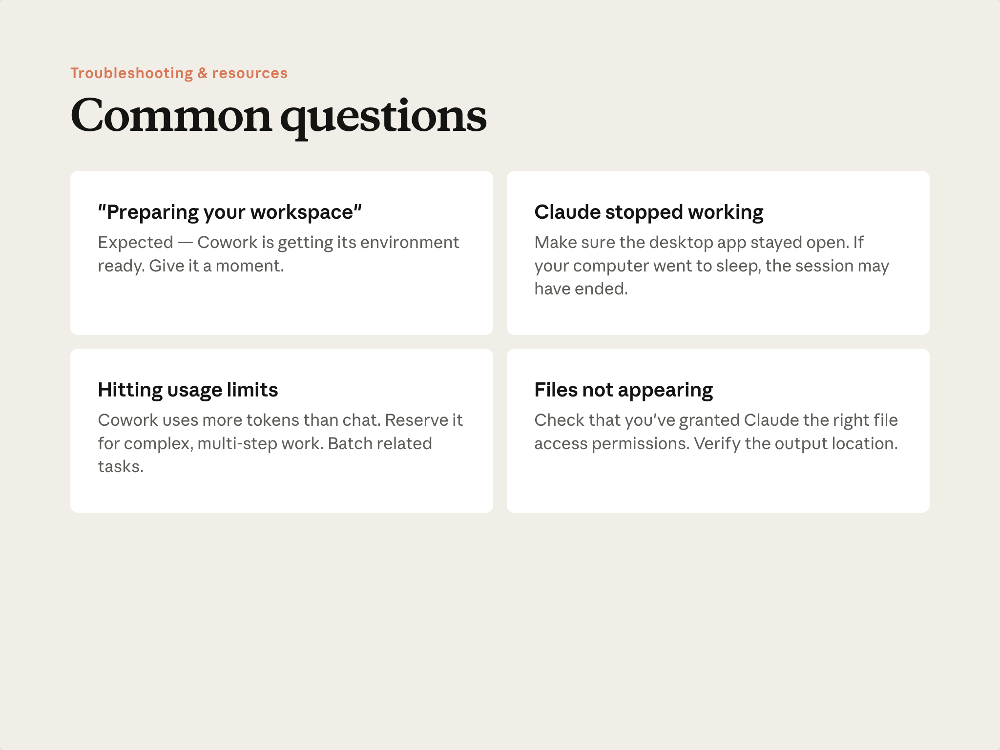
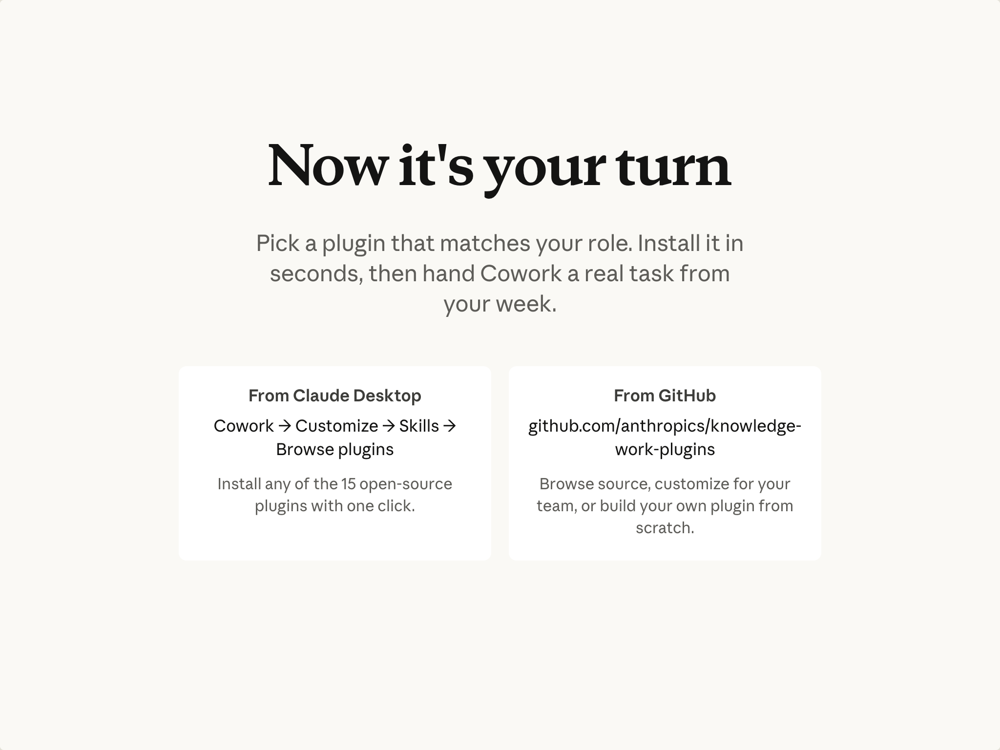

예상 소요 시간: 10분
학습 목표
이 레슨을 마치면 다음을 할 수 있습니다:
- Cowork 사용 시 자주 발생하는 문제를 인식하고 해결한다
- 다음에 무엇을 해야 할지 안다: 설치, 빌드, 예약, 공유
- 이 강좌 이후 도움을 받을 수 있는 곳을 안다
자주 발생하는 문제와 접근 방법

Cowork가 작업 공간을 준비 중입니다
Cowork는 시작하기 전에 환경을 준비합니다. 일반 채팅 세션이 시작될 때보다 조금 더 걸릴 수 있습니다. 잠시 기다려 주세요. 특히 처음 사용하거나 업데이트 후에는 이런 현상이 정상입니다.
작업이 중간에 멈췄습니다
가장 흔한 원인: 작업 도중 데스크톱 앱이 종료된 경우입니다. 컴퓨터를 절전 모드로 전환하는 것은 괜찮습니다. 세션이 유지되고 깨어나면 이어서 진행됩니다. 앱을 종료하면 작업이 일시 중지됩니다. Claude Desktop이 열려 있는지 확인하고, 열려 있다면 연결 상태를 확인하세요.
사용량 한도에 도달했습니다
Cowork는 채팅보다 더 많은 할당량을 사용하며, 고성능 모델에서 장시간 실행되는 작업이 가장 많이 사용합니다. 10강을 참고하세요: 관련 작업을 묶어 처리하고, 적합한 작업은 채팅을 사용하며, 모델 선택을 작업 요구 사항에 맞게 맞추세요.
Cowork가 만들었다는 파일을 찾을 수 없습니다
출력 파일이 예상과 다른 폴더에 저장되었거나, Cowork가 가리키고 있던 폴더가 생각하던 곳이 아닐 수 있습니다. Cowork가 사용 중이던 작업 폴더를 확인하세요. 설정에서 폴더 접근 권한을 확인하세요. Cowork에게 직접 파일을 어디에 저장했는지 물어보세요.
다음에 할 일

목표: 신뢰할 수 있는 스킬을 예약 실행하는 것입니다. 그 단계는 다음과 같습니다:
- 플러그인을 설치하세요. 라이브러리를 둘러보고, 내 역할에 맞는 것을 선택해 설치하세요. 플러그인 폴더를 열고 스킬 파일 하나를 읽어서 스킬이 실제로 어떻게 생겼는지 확인하세요.
- 실제 작업을 실행해 보세요. 실제 업무에서 작업을 하나 골라보세요. 작더라도 의미 있는 것으로요. 찾는 순간은 이겁니다: 다른 일을 하고 돌아왔을 때 완성된 파일이 이미 거기 있는 그 순간.
- 스킬을 만드세요. 브랜드 산출물을 만든다면 브랜드 가이드라인 스킬을 구성하세요. 그렇지 않다면, 다음에 작업을 실행하다가 또 반복할 것 같다는 걸 깨달을 때 그 세션을 스킬로 저장하세요.
- 예약을 설정하세요. 스킬을 일정에 넣으세요. 예약된 시간에 앱이 닫혀 있으면, 다시 열자마자 실행됩니다.
- 공유하세요. 팀원을 위해 스킬을 패키지로 만들거나, Team 또는 Enterprise 플랜을 사용 중이라면 관리자에게 더 넓게 공유하는 방법을 문의하세요.
업무 흐름에 맞는 속도로 진행하세요. 타이밍보다 순서가 더 중요합니다.
더 알아보기
- 설정 및 문제 해결 — Cowork 시작하기
- 작업 아이디어 — Cowork 활용 사례 갤러리
- 플러그인 소스 및 커스터마이징 — github.com/anthropics/knowledge-work-plugins
- Claude와 함께하는 지속적인 습관 만들기 — AI Fluency 강좌
레슨 되돌아보기
- Cowork에게 처음으로 맡길 실제 작업은 무엇인가요?
- 내 업무에 맞는 플러그인은 무엇인가요? 이미 설치했나요?
- 지금 수동으로 하고 있는 워크플로 중에서, 예약 실행으로 가장 많은 시간을 절약할 수 있는 것은 무엇인가요?
축하합니다
Cowork 최종 사용자 교육을 완료했습니다. 이제 작업을 설명하고, 계획을 검토하고, 작업이 실행되도록 두고, 결과를 검토하는 방법을 알고 있습니다. 채팅과 함께 업무에서 Cowork가 어디에 맞는지도 알게 되었습니다. 한 번 가르쳐 두면 다시 설명할 필요가 없다는 것도 알고 있습니다.
이제 실제 작업을 하나 골라서 맡겨 보세요.
피드백
업무에서 Cowork를 어떻게 활용하고 계신지 듣고 싶습니다. 피드백을 여기 서 공유해 주세요.
감사의 말 및 라이선스
Copyright 2026 Anthropic. All rights reserved.